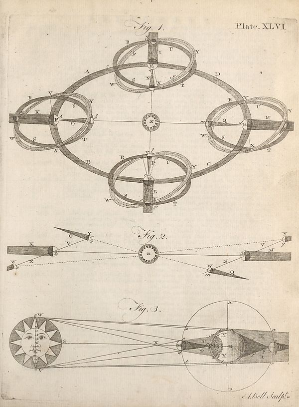

Source · scan and Parse blocks
Layers 1

Parse text by block reading order
- 0PicturePlate. XLVI
Provenance page_id, checksum, Parse model
- page_id
- britannica:309f765b1ecc83e0a7f7762e44b4a927a7555443:train:2209
- sha256
- 1ee9bc409f6798b0e4f4e45d63d75caae5197059df72701387ee24385cbff28e
- Parse
- nvidia/nemotron-3.5-parse · finish stop